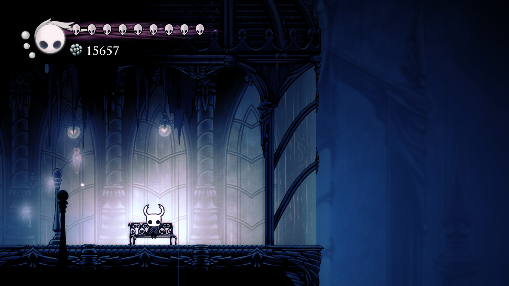

Play the music!
Hello! This is my final project for my 3D Graphics class at RIT. It was written in JavaScript using WebGL as an expansion to a previous assignment I had made. The biggest things I added to the engine were Textured Phong shading, transparency, and animation. I also learned a bit of 3D modeling to make everything you can see by hand. The only things I didn't make are the music and the screenshot from the game itself.
Hollow Knight is one of my favorite games ever, so I decided to base my final project on a really great moment in the game that means a lot to me. The game is about a small bug called The Knight and their traversal the depths of a collapsed underground civilization. They meet many bugs to befriend or fight in many strange places. The City of Tears is the first region of the game that appears to have any evidence of highly organized life in and around it.
I remember my first descent into the city very well: it was late at night for me and I was a little tired, but I was enjoying a very relaxing play session. I went into the next room and dropped into The City of Tears. The music changed, the visual tone of the game shifted to a gentle blue, and the view swung out to show me the beautiful architecture of the city. It was beautiful. I sat for a few moments watching the rain through the window.
The project was written using HTML and JavaScript. The rendering was done with WebGL and GLSL. I used the gl-matrix library to perform matrix transformations on the 3D models' coordinates. Most of the rest of the code was built from portions of previous completed assignments.
There's not much technical stuff going on with The Knight themselves. I simply created the model and placed it into the scene.
The next thing I modeled was the bench. I wanted to learn how to handle transparency, so I intentionally made the front and back of the bench a flat polygon with a transparent texture. That's why you can see through to the wall behind it.
The room around The Knight and the bench was also intended to have transparency, but without anything to display behind it I suppose it didn't really matter too much.
I knew from the start that I wanted my scene to feature animated rain, but I wasn't sure exactly how I would do it. Eventually, I remembered that video games often use extremely humorous solutions to mildly complex problems. For example, Fallout 3 is now infamous for its train... which is actually a hat worn by an invisible character who runs around on the tracks to move the train. Inspired by this, I decided that instead of making my program draw lines of rain, I would instead make another 3D model of a bunch of sticks spread out in a very large circle and spin it in front of the camera. This let me easily animate the rain by reusing the structure I already programmed instead of having to create a system for randomly generating and placing rain drops, moving them to the top or removing them from the bottom of the screen, etc. It also lets me easily make the animation play at the same speed regardless of the framerate of the display, since the rotation of the wheel on each frame is proportional to how much time has passed since the last frame was drawn. The fact that it's a static model means the animation of the rain actually has a sort of loop, but I hopefully picked a good speed to avoid any obvious looping.
Thank you very much for taking a look at my project! I know it's not the best looking, but I love what I was able to do with it in the time frame I had, and I would love to try something even more ambitious in the future!
Here's the original scene by the way:
